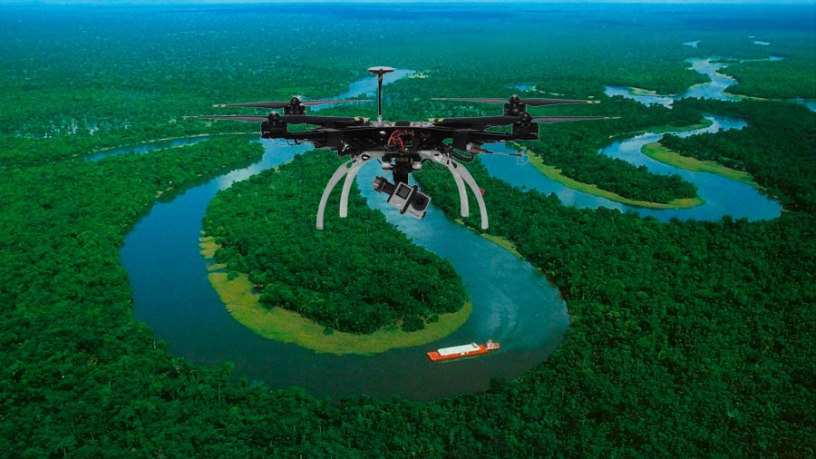
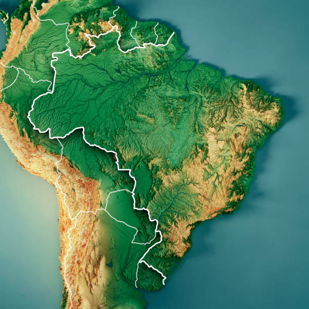

Drones de Monitoreo
Los drones equipados con sensores avanzados permiten un monitoreo continuo de la Amazonía, detectando incendios, deforestación y cambios ambientales en tiempo real.
Ver más

Mapa de Alertas
Un mapa interactivo que muestra las áreas afectadas por deforestación, permitiendo una rápida acción para su conservación.
Ver másMonitoreo con Drones
Utilizamos tecnología de punta para vigilar el ecosistema amazónico. Nuestros drones están equipados con cámaras térmicas e infrarrojas para detectar anomalías ambientales.
Los datos recolectados permiten a científicos y autoridades tomar medidas precisas para la conservación y restauración de la selva.
VolverMapa de Deforestación
A través de nuestro sistema de monitoreo, ofrecemos un mapa interactivo actualizado con alertas sobre deforestación, incendios y cambios en la vegetación.
Volver